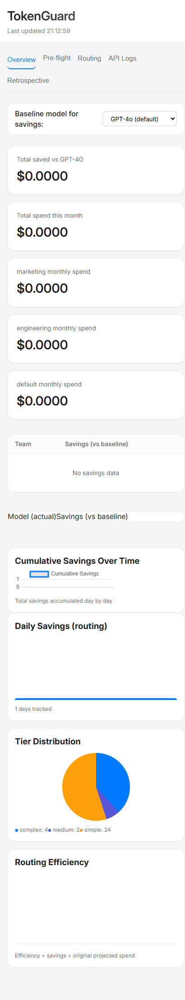
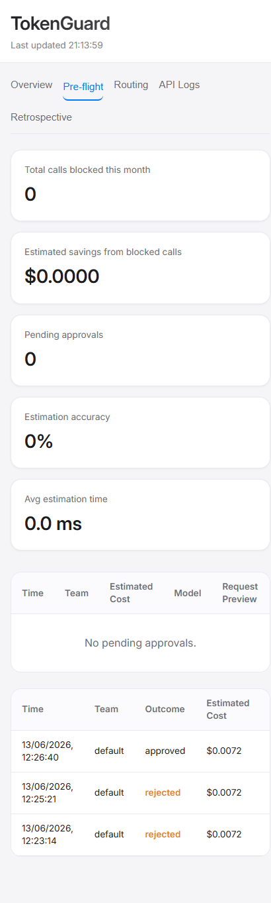

TokenGuard
Stop expensive AI calls before they happen.
Save 70‑95% on simple tasks with smart routing.
Save 70‑95% on simple tasks with smart routing.
TokenGuard is an open‑source proxy that sits between your application and AI providers (OpenAI, Anthropic). It estimates the cost of every API call before forwarding it, blocks expensive calls until a human approves them, and automatically routes simple requests to cheaper models – all with zero code changes.
💰 Pre‑flight estimation
Calculates cost in milliseconds; holds expensive calls for approval.🎯 Smart routing
Uses a local classifier to route simple tasks to cheap models (e.g., gpt-4o-mini).🛡️ Loop detection
Blocks runaway agents after 10 failures in 60 seconds.📊 Real‑time dashboard
Auto‑refreshing tabs for spend, savings, approvals, routing decisions, and retrospective analytics.🔐 Security
Basic auth, signed approval URLs, rate limiting, CORS, optional prompt redaction.🧪 Mock provider
Test the full workflow without real API keys.Dashboard Preview

Overview – total spend, savings vs GPT-4o, daily savings chart

Pre‑flight – pending approvals, history, and estimation accuracy

Routing – decisions, confidence, savings, cache hits

API Logs – every proxied call with tokens, cost, latency

Retrospective – approved calls, business context, outcomes, reuse tracking